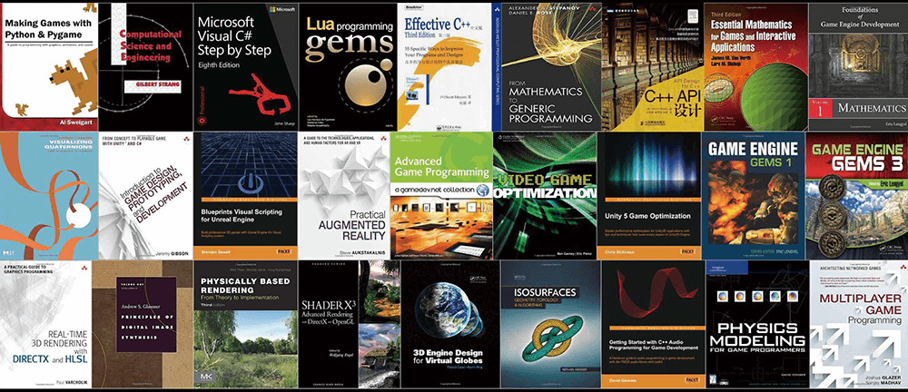

资源
- GAMES104-现代游戏引擎：从入门到实践_哔哩哔哩_bilibili
- GAMES104 - 现代游戏引擎入门必修课 (boomingtech.com)
- Piccolo 社区 - 游戏引擎爱好者的新家园 (piccoloengine.com)
- BoomingTech/Piccolo: Piccolo (formerly Pilot) – mini game engine for games104 (github.com)
- GAMES104：现代游戏引擎，从理论到实践 - 知乎 (zhihu.com)
课程
第一节：游戏引擎导论
OVERVIEW OF GAME ENGINE
Game: Miracle of Modern computer Technology
游戏：现代计算机技术的奇迹
Game Engine: The Diamond on the crown
游戏引擎：皇冠上的钻石
游戏引擎中所涉及的技术太多了。
Topic 1: WHY WE NEED TO LEARN
Game Engine is the Foundation of Virtual World
游戏引擎是虚拟世界的基础
游戏引擎除了做游戏，还可以干这些事情：
-
METAHUMAN
拟人
-
CINEMATIC & ANIMATION
电影与动画
-
SIMULATION
模拟（军事）
-
DIGITAL TWIN
数字孪生
Topic 2: HISTORY OF GAME ENGINE
Early Age of Video Games
早期游戏：红白机，超级马里奥，坦克大战，魂斗罗。
Father of Game Engine
- John carmack
John conceived and executed a new way oforganizing the components of computer games by separating execution of core functionality by thegame engine from the creative assets that filled the play space and content of a specific game title.
约翰构思并实施了一种组织计算机游戏组件的新方法，将游戏引擎执行的核心功能与填充特定游戏标题的游戏空间和内容的创意资产分开。
这个人被称之为游戏引擎之父，让不同游戏间代码可以互用。
- Wolfenstein 3D (1992)
“Father of 3D shooters” and first demonstration of game engine application
“3D 射击之父”暨游戏引擎应用首次演示
- Doom
Along with its predecessor Wolfenstein 3D, Doom defined the FPS genre and inspired numerous similar games, often called the Doom clones. lt was the first online distribution game, and it pioneered technologies including 3D graphics, networked multiplayer gaming, and support for custom modifications via packaged WAD files.
与其前身《德军总部 3D》一起，《毁灭战士》定义了 FPS 类型，并启发了许多类似的游戏，通常被称为《毁灭战士》克隆游戏。它是第一款在线发行游戏，它开创了包括 3D 图形、网络多人游戏以及通过打包的 WAD 文件进行自定义修改的支持等技术。
- Engine License
1994, ID Software license Doom engine to Raven, which built a successful game ShadowCaster based on it.
1994 年，ID Software 将 Doom 引擎授权给 Raven，Raven 基于它打造了一款成功的游戏 ShadowCaster。
Early Age of Modern Game Engine
-
Quake
-
Unlike the Doom Engine, the Quake engine offered full real-time 3D rendering and supported early 3D acceleration through OpenGL.
与 Doom 引擎不同，Quake 引擎提供完整的实时 3D 渲染，并通过 OpenGL 支持早期 3D 加速。
A game engine is a software framework primarily designed for the development of video games, which normally includes relevant libraries and support programs
游戏引擎是主要为视频游戏开发而设计的软件框架，通常包括相关的库和支持程序。
Family of Game Engines

游戏引擎有三大类：
-
Commercial Engine
商用引擎
-
In-house Engine
内部引擎（寒霜等，不公开）
-
Free Engine
免费引擎
Middleware of Game Engine
游戏引擎中可能用到的框架，用于解决某些特定问题。
Topic 3: WHAT ISGAME ENGINE
What’s Game Engine?
A game engine is a software framework primarily designed for the development of video games, and generally includes relevant libraries and support programs. The “engine” terminology is similar to the term “software engine” used in the software industry. Game engine can also refer to the development software utilizing this framework, typically offering a suite of tools and features for developing games. Developers can use game engines to construct games for video game consoles and other types of computers. The core functionality typically provided by a game engine may include a rendering engine ( “renderer” ) for 2D or 3D graphics,a physics engine or collision detection (and collision response), sound,scripting, animation, artificial intelligence, networking, streaming, memory management, threading, localization support,scene graph, and video support for cinematics. Game engine implementers often economize on the process of game development by reusing/adapting, in large part,the same game engine to produce different games or to aid in porting games to multiple platforms.
游戏引擎是主要为视频游戏开发而设计的软件框架，一般包括相关的库和支持程序。“引擎”术语类似于软件行业中使用的术语“软件引擎”。 游戏引擎也可以指利用该框架的开发软件，通常提供一套用于开发游戏的工具和功能。 开发人员可以使用游戏引擎为视频游戏机和其他类型的计算机构建游戏。游戏引擎通常提供的核心功能可能包括用于 2D 或 3D 图形的渲染引擎（“渲染器”）、物理引擎或碰撞检测（和碰撞响应）、声音、脚本、动画、人工智能、网络、流媒体、内存管理、线程、本地化支持、场景图和电影视频支持。游戏引擎实现者通常通过在很大程度上重用/改编相同的游戏引擎来制作不同的游戏或帮助将游戏移植到多个平台，从而节省游戏开发的过程。
Wiki 里对游戏引擎的解释十分复杂。
Our Definition: What’s Game Engine?
-
Technology foundation of the Matrix
黑客帝国的技术基础
-
Productivity tools of creation
创造的生产力工具
-
The Art of complexity
复杂性的艺术
Infinite Details of the World
天地有大美而不言
Complexity of Simulation by 0/1
用计算机的 0 和 1 表示这些东西，太难了
Game Engine is Far Beyond Rendering

渲染只是游戏引擎中的一小部分。
God with Limited Power in Realtime
上帝所创造的真实世界拥有无尽的算力。计算机所创造的世界受算力影响，需要在 1/帧率 时间内完成计算，因此优化是一个大问题。
Toolchain for Creators
给创造者的工具——游戏引擎。
Developer Platform
-
For Programmer
对于程序员
-
Expandable APl interfaces allow programmers to define various of gameplay without changing the core.
可扩展的 APl 接口允许程序员在不改变核心的情况下定义各种游戏玩法。
-
-
For Studio
对于工作室
-
Collaborate hundreds of developers with different work streams smoothly together.
数百名具有不同工作流程的开发人员顺利协作。
-
Update the Engine in the Air
游戏引擎更新的过程中要保证兼容性，相当于在飞行过程中更换飞机零件。
Yes, We Are…
是的，我们是…
The Creator and Operator of This Ugly Monster.
这个丑陋怪物的创造者和操纵者。
But Future Will be Even More Difficult.
但未来会更加困难。
Topic 4: HOW TO STUDY
Game Engine Technology Covers All Major Area of Computer Science
游戏引擎技术涵盖计算机科学的所有主要领域。

多读书多看报。
Focus on the Main Road by Building the Framework
游戏引擎领域范围太广了，课程只按主路进行。
Topic 5: COURSE CONTENT
Basic Elements
-
Engine structure and layers
引擎结构和层数
-
Data organization and management
数据组织和管理
Rendering
- Model, material, shader, texture
- Light and shadow
- Render pipeline
- Sky, terrain, etc
Animation
-
Basic concepts of animation
动画的基本概念
-
Animation structure and pipeline
动画结构和流程
Physics
-
Basic concepts of Physics System
物理系统的基本概念
-
Gameplay applications
游戏应用程序
-
Performance optimization
性能优化
Gameplay
-
Event System
事件系统
-
Scripts System
脚本系统
-
Graph Driven
图驱动（蓝图）
Misc. Systems
杂项系统
-
Effects
-
Navigation
-
Camera
-
…
Toolchain
工具链
-
C++ Reflection Expose variables and functions used in the editor. That is, the game creation tool will use a form of reflection (or similar) on the code provided by the developers, which then allows it to expose parts of it in editors for designers.
公开编辑器中使用的变量和函数。也就是说，游戏创建工具将对开发人员提供的代码使用某种形式的反射（或类似形式），然后允许它在编辑器中向设计人员公开部分代码
-
Data Schema A data schema is the formal description of the structures which a system is working with.
数据模式是系统正在使用的结构的正式描述。
Online Gaming
-
Lockstep synchronization
锁步同步
-
State synchronization
状态同步
-
Consistency
一致性
Advanced Technology
-
Motion Matching
动作匹配
Motion Matching is a simple yet powerful way of animating characters in games. Compared to other methods, it doesn’t require very much manual work once you have a basic set-up. there is no need to structure clips in graphs, to carefully cut or synchronize them, or to explicitly create new transitions between status.
动作匹配是一种简单而强大的游戏角色动画方式。与其他方法相比，一旦完成基本设置，它就不需要太多手动工作。无需在图表中构造剪辑、仔细剪切或同步它们，或显式地在状态之间创建新的转换。
-
Procedural Content Generation (PCG)
程序内容生成（PCG）
PCG is a method of creating data algorithmically as opposed to manually, typically through a combination of human-generated assets and algorithms coupled with computer-generated randomness and processing power.
PCG 是一种通过算法而不是手动创建数据的方法，通常通过将人类生成的资产和算法与计算机生成的随机性和处理能力相结合。
-
Data-Oriented Programming (DOP)
面向数据的编程（DOP）
DOP is an exciting new paradigm that eliminates the usual complexity caused by combining data and code into objects and classes. In DOP, you maintain application data in persistent generic data structures separated from the program’s code. You use general-purpose functions to manipulate the data without mutating it. This approach rids your applications of state-related bugs and makes your code much easier to understand and maintain.
DOP 是一个令人兴奋的新范例，它消除了将数据和代码组合到对象和类中通常带来的复杂性。在 DOP 中，您可以在与程序代码分离的持久通用数据结构中维护应用程序数据。您可以使用通用函数来操作数据而不改变数据。这种方法可以消除应用程序中与状态相关的错误，并使您的代码更易于理解和维护。
-
Job System A job system manages multithreaded code by creating jobs instead of threads.
作业系统通过创建作业而不是线程来管理多线程代码。
-
Lumen Unreal Engine 5’ s new fully dynamic global illumination and reflections system that is designed for next-generation consoles. lt renders diffuse interreflection with infinite bounces and indirect specular reflections in large, detailed environments at scales ranging from millimeters to kilometers.
虚幻引擎 5 专为下一代游戏机设计的全新全动态全局照明和反射系统。它可以在大型、详细的环境中以毫米到公里的尺度呈现具有无限反射和间接镜面反射的漫反射。
-
Nanite Unreal Engine 5’ s new virtualized geometry system which uses a new internal mesh format and rendering technology to render pixel scale detail and high object counts.
虚幻引擎 5 的新虚拟几何系统使用新的内部网格格式和渲染技术来渲染像素级细节和高对象数量。
Topic 6: COURSE LOGISTICS
参考书籍：Jason Gregroy,“Game Engine Architecture”, 3rd or later editions
第二节：引擎架构分层
A Glance of Game Engine Layers
Sea of Codes
Where to begin？
游戏引擎架构十分复杂，该从何开始研究？
课程认为游戏引擎可以分为五层，自上而下依次是：
-
Tool Layer
工具层
-
Function Layer
功能层
-
Resource Layer
资源层
-
Core Layer
核心层
-
Platform Layer
平台层
Tool Layer：给游戏开发者的平台
Chain of Editors
Function Layer：实现游戏的各种基础功能
Make lt Visible, Movable and Playable
使游戏内容可见、可移动和可播放
-
Animation
动画
-
Physics
物理
-
Rendering
渲染
-
Camera, HUD and Input
相机，HUD 和输入
HUD 是 Heads-Up Display 的缩写，指的是游戏界面上用来显示各种信息的部分，通常位于屏幕的边缘或角落。HUD 可以包括玩家的健康值、能量条、地图、任务目标、物品栏等信息，以帮助玩家更好地了解游戏情况并进行操作。HUD 的设计可以根据游戏类型和风格而有所不同，有些游戏甚至允许玩家自定义 HUD 以满足其个人喜好。
-
Script, FSM and Al
脚本，有限状态机和人工智能
Resource Layer：管理游戏各种 assets。
Data and Files
有多种文件格式需要游戏引擎去读取。
Core Layer：类似操作系统，需要管理线程、内存等资源分配。
Swiss Knife of Game Engine
游戏引擎的瑞士刀
Platform Layer：让游戏编写者写出的游戏能够在不同平台中运行。
Launch on Different Platforms
在不同平台上启动
3rd Parity Libraries：第三方库
Middleware and 3rd Party Libraries
市面上已有多种轮子以实现某些功能。
Explore Game Engine Layers
Practice is the Best Way to Learn
实践是学习的最好办法！我们从一个案例开始。
Simple Animated Character Challenge
简单的动画角色挑战。我想设计一个动画系统，要求如下：
-
Create, animate and render a character
创建、动画和渲染角色
-
Playable on selected hardware platforms
可在选定的硬件平台上播放
Resource-How to Access My Data
资源 - 如何访问我的数据
-
Offline Resource lmporting
线下资源导入
-
Unify file access by defining a meta asset file format (ie.ast)
通过定义元资产文件格式（即 .ast）来统一文件访问（对于 PSD、MAX、MAYA 这种类型的文件，可能包含了大量对游戏引擎来说的无用信息，应该去除。）
-
Assets are faster to access by importing preprocess
通过导入预处理可以更快地访问资产
-
Build a composite asset file to refer to all resources
构建复合资产文件以引用所有资源
-
GUlD is an extra protection of reference
GUID 是对参考的额外保护
Resource-Runtime Asset Manager
资源运行时资产管理器
Runtime Resource Management
运行时资源管理（游戏运行时需要加载/移除哪些资源）
-
A virtual file system to load/unload assets by path reference
通过路径引用加载/卸载资源的虚拟文件系统
-
Manage asset lifespan and reference by handle system
通过手柄系统管理资产寿命和参考
Resource-Manage Asset Life Cycle
资源管理资产生命周期
Memory management for Resources - life cycle
资源的内存管理 - 生命周期
-
Different resources have different life cycles
不同的资源有不同的生命周期
-
Limited memory requires release of loaded resources when possible
有限的内存需要尽可能释放已加载的资源
-
Garbage collection and deferred loading is critical features
垃圾收集和延迟加载是关键功能
Function-How to Make the World Alive
功能层有这么多东西需要去实现。
Function-Dive into Ticks
功能层必须在每个 tick 内完成 Logic、Input、Camera、Motor、Character Controller、Animation、Physics、Render、Network.、I/O、Memory GC、Etc. 的处理。
Function-Tick the Animation and Renderer
对于动画和渲染器来说……
-
In each tick (over-simplified version)
在每个刻度中（过于简化的版本）
-
Fetch animation frame of character
获取角色的动画帧
-
Drive the skeleton and skin of character
驱动角色的骨骼和皮肤
-
Renderer process all rendering jobs in an iteration of render tick for each frame
渲染器在每帧的渲染标记迭代中处理所有渲染作业
-
Function-Heavy-duty Hotchpotch
重型大杂烩
-
Function Layer provides major function modules for the game engine
功能层为游戏引擎提供主要功能模块
-
Object system (HUGE)
对象系统（巨大）
-
-
Game Loop updates the systems periodically
游戏循环定期更新系统
-
Game Loop is the key of reading codes of game engines
游戏循环是读取游戏引擎代码的关键
-
-
Blur the boundary between engine and game
模糊引擎和游戏之间的界限
-
Camera, character and behavior
镜头、角色和行为
-
Design extendable engine APl for programmer
为程序员设计可扩展引擎 APl
-
Function-Multi-Threading
多线程
-
Multi-core processors become the mainstream
多核处理器成为主流
-
Many systems in game engine are built for parallelism
游戏引擎中的许多系统都是为并行性而构建的
-
Core-Math Library
一个数学库，实现渲染之类的功能。
Core-Math Effciency
核心层要讲究效率，比如 C++ 的 STL 库中的 1/sqrt(x) 速度慢，要换一种近似但是快速的算法。
Core -Data Structure and Containers
处理数据结构
-
Vectors, maps, trees, etc.
矢量，图，树等
-
Customized outperforms STL
定制优于 STL 的算法
-
Avoid FRAGMENT memory!
避免碎片内存！
-
Skeleton tree
骨架树
-
Animation frame sequence
动画帧序列
Core-Memory Management
核心内存管理
-
Major bottlenecks of game engine performance
游戏引擎性能的主要瓶颈
-
Memory Pool / Allocator
内存池/分配器
-
Reduce cache miss
减少缓存未命中
-
Memory alignment
内存对齐
-
-
Polymorphic Memory Resource (PMR)
多态内存资源（PMR）
-
Cache locality/diffusion
缓存局部性/扩散
-
Memory Arena
内存池
-
Put data together
将数据放在一起
-
Access data in order
按顺序访问数据
-
Allocate and de-allocate as a block
作为块分配和取消分配
Core-Foundation of Game Engine
游戏引擎核心基础
-
Core layers provide utilities needed in various function modules
核心层提供各种功能模块所需的实用程序
-
Super high performance design and implementation
超高性能设计与实现
-
High standard of coding
高标准的编码
Platform-Target on Different Platform
不同平台上的平台目标
Compatibility of different platforms, provides platform-independentservices and information for upper layers
不同平台的兼容性，为上层提供平台无关的服务和信息
-
File system
文件系统
-
Path: Slash/backslash, Environment variables
路径：斜杠/反斜杠、环境变量
-
Directory Traversal
目录遍历
-
Platform-Graphics APl
图形 API
Render Hardware Interface (RHl)
渲染硬件接口 (RHl)
-
Transparent different GPU architectures and SDK
透明的不同 GPU 架构和 SDK
-
Automatic optimization of target platforms
自动优化目标平台
在底层 API 上用 C++ 的虚函数再封装一层。
Platform-Hardware Architecture
硬件架构
平台层要适应不同种硬件架构。
Tool-Allow Anyone to Create Game
允许任何人创建游戏
Unleash the Creativity
释放创造力。创造对游戏开发者友好的开发环境。
-
Build upon game engine
基于游戏引擎构建
-
Create, edit and exchange game play assets
创建、编辑和交换游戏资产
Flexible of coding languages
灵活的编码语言
Tool-Digital Content Creation
Asset Conditioning Pipeline
- 资产调整管道
Why Layered Architecture?
Decoupling and Reducing Complexity
解耦并降低复杂性
-
Lower layers are independent from upper layers
下层独立于上层
-
Upper layers don’t know how lower layers are implemented
上层不知道下层是如何实现的
Response for Evolving Demands
响应不断变化的需求
-
Upper layers evolve fast, but lower layers are stable
上层发展很快，但下层稳定
Mini Engine-Pilot
课程特意设计的小游戏引擎。
Neat PILOT Engine
整洁的 PILOT 引擎
Build by C /C++
由 C/C++ 构建
-
Runtime: ~13,000 lines
运行时间：约 13,000 行
-
Editor: ~2,000 lines
编辑器：约 2,000 行
Follow Engine Layers
遵循引擎分层
-
Source code still improving
源代码仍在改进
Support Platform
支持平台
- Windows
- Linux
- Macos (working on M1)
PlLOT Editor and Runtime
编辑器和运行时
Basic Editing
基础编辑
-
Add/Delete objects
添加/删除对象
-
Move/Scale/Rotate obiects
移动/缩放/旋转对象
Simple Functions
简单的功能
-
Character control
角色控制
-
Camera
相机
这个游戏引擎还引入了 ECS。
第三节：如何构建游戏世界
How to build a game world?
-
What does a game world consist of?
游戏世界由什么组成？
-
How should we describe these things?
我们该如何描述这些事情呢？
-
How are these things organized?
这些东西是如何组织的？
Dynamic Game Objects

假设我想创建一个射击游戏场景，我设计一些可以随游戏进程而改变的 GameObject（GO）。
Static Game Objects
再设计一些不可随游戏进程改变（游戏生成时长啥样，就是啥样）的 GO。
Environments
由地编生成的环境。
Other Game Objects
还有一些或许不可见的东西，比如空气墙，触发区域，特定规则，导航网络等。
Everything is a Game Object
这些东西都可称之为 Game Object（GO）。
How to Describe a Game Object？
我们该如何描述一个 GO 呢？假如，我们想要一个 drone 无人机。
How Do We Describe a Drone in Reality?
现实环境中，如何描述一个无人机？
Properties and behaviors!
-
Shape (property)
形状（属性）
-
Position (property)
位置（属性）
-
Move (behavior)
移动（行为）
-
Capacity of battery (property)
电池容量（属性）
-
Etc.
Game Object

将 property 用变量定义，behavior 用函数定义。
1 | |
Drone vs. Armed Drone
这个时候我们想设计一个战斗无人机，比起一般无人机，多了 ammo 弹药的 property 和 fire 的 behaviour。
Game Object
-
Inheritance
继承
使用集成的方法，让 ArmeDrone 继承 Drone 类，然后写上 ammo 弹药的 property 和 fire 的 behaviour 的定义。
No Perfect Classification in the Game World!
但当继承派生的类变得复杂时，简单的继承就不太好使了。
Component Base
-
Component Composition in the Real World
现实世界中的组件构成
将一个实体拆分成各个组件再操作！
Components of a Drone
对于我们定义的无人机，我们将它拆分成多个 components：
- Transform 变换
- Motor 发动机
- Model 模型
- AI
- Animations 动画
- Physics 物理
Component
- Drone vs. Armed Drone
此时，如果我们在无人机的基础上想要改成战斗机，只需修改其中的部分 components 即可。
Components in Commercial Engines
在 Unity 和 UE 两大商业引擎中，也使用了 components 的思想
Takeaways
-
Everything is a game object in the game world
游戏世界中的一切都是游戏对象
-
Game object could be described in the component-based way
游戏对象可以用基于组件的方式描述
How to Make the World Alive？
如何让世界运行起来？
Object-based Tick
Tick 相当于游戏世界中的普朗克时间。
基于对象的 tick，每个 Tick 中分别处理好各个 GO 的逻辑。
Component-based Tick
基于组件的 Tick，依次处理好各个 component 的逻辑。
Object-based Tick vs. Component-based Tick

-
Object-based tick
基于对象的刻度
-
Simple and intuitive
简单直观
-
Easy to debug
易于调试
-
-
Component-based tick
基于组件的刻度
-
Parallelized processing
并行处理
-
Reduced cache miss
减少缓存未命中
-
更高效！
How to Explode an Ammo in a Game?
如何处理游戏中弹药爆炸的逻辑？
Hardcode
给炸弹爆炸时写一个函数，判断周围 GO 的类型然后逐个写逻辑。
Events
炸弹爆炸时分发一个消息，各个 GO 接收到消息后执行逻辑。
-
Message sending and handling
消息发送和处理
-
Decoupling event sending and handling
解耦事件发送和处理
这么做耦合度低，被普遍采用。
Events Mechanism in Commercial Engines
商业引擎中的事件机制
Unity 和 UE 中都普遍用到了这样的机制。
How to Manage Game Objects?
如何管理 GO？
Scene Management
-
Game objects are managed in a scene
游戏对象在场景中管理
-
Game object query
游戏对象查询
-
By unique game object lD.
通过独特的游戏对象 ID。
-
By object position
按物体位置
-
假设一个炮弹爆炸派发了一个事件，要让游戏中的所有 GO 接受这个事件并处理（是否在爆炸范围内），性能太低，需要作出一定的空间划分。
-
Simple space segmentation
简单的空间划分
-
Segmented space by object clusters
按对象簇分割空间
-
Hierarchical segmentation
分层细分
-
Spatial Data Structures
空间数据结构
划分空间的各个算法：
-
Bounding Volume Hierarchies (BVH)
边界体积层次结构 (BVH)
-
Binary Space Partitioning (BSP)
二进制空间分区（BSP）
-
Octree
八叉树
-
Scene Graph
场景图
Takeaways
-
Everything is an object
一切都是对象
-
Game object could be described in the component-based way
游戏对象可以用基于组件的方式描述
-
States of game objects are updated in tick loops
游戏对象的状态在滴答循环中更新
-
Game objects interact with each other via event mechanism
游戏对象通过事件机制相互交互
-
Game objects are managed in a scene with efficient strategies
游戏对象在场景中以有效的策略进行管理
对于一些存在父子层级关系的 GO。
Animation、Motor 和 Physics 三个 components 相互影响，如果互相派发消息，性能会不佳。
Immediate Event Sending or not
是否立即发送事件
可以设计一个“邮局”，收发消息由这个邮局控制，提升性能！